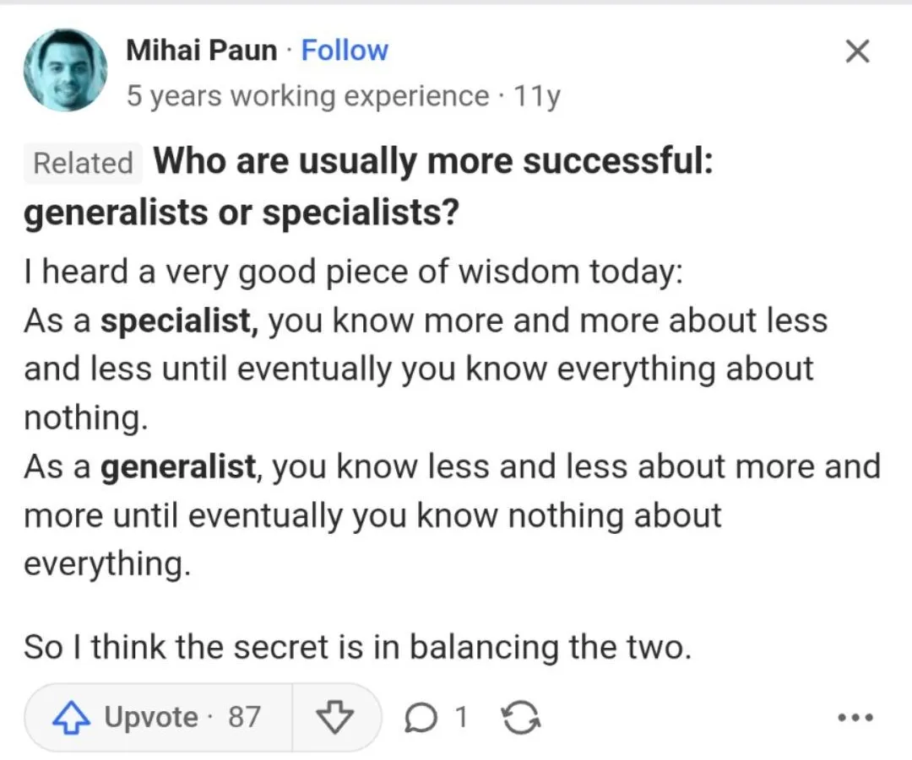

Generalized Specialization (Noun)
A generalist who specializes in given strengths/interests
Not sure if someone coined this term, but I had this thought a couple of weeks ago.
Several people say “Oh, it is much better to specialize for X, Y, and Z” while others say it’s better to generalize.
I saw a post on Quora, that resonated with me.
Life will forever be a balancing act figuring out what works and what doesn’t. Yet, generalized specialization in my opinion allows you to know more about everything but be more focused.
For example, as for me, I classify myself as a builder, writer, and musician. I like to build startups, write stories/poems, and make music. There are a lot of things that go under those umbrellas.
Building startups requires know-how’s on coding, design, sales, marketing, etc.
Writing stories/poems requires knowing the structure, literary devices, etc.
Making music requires knowing how to produce, mix, master, songwriting, etc.
There are many facets underneath each one, but you’re generally generalizing specialization. Generalizing by doing various interests while specializing in a select few interests and focusing on gaining depth within them.
I believe there are plenty of people who are doing this today and many refer it to as “wearing many hats,” but I feel that this concept of generalized specialization is a crucial way to enjoy a varied lifestyle and be able to live every single day fresh.